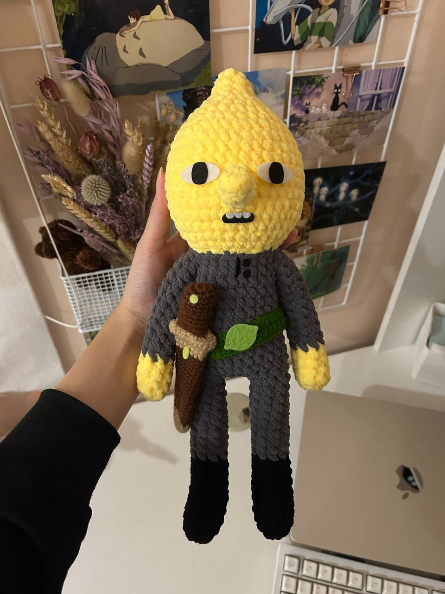
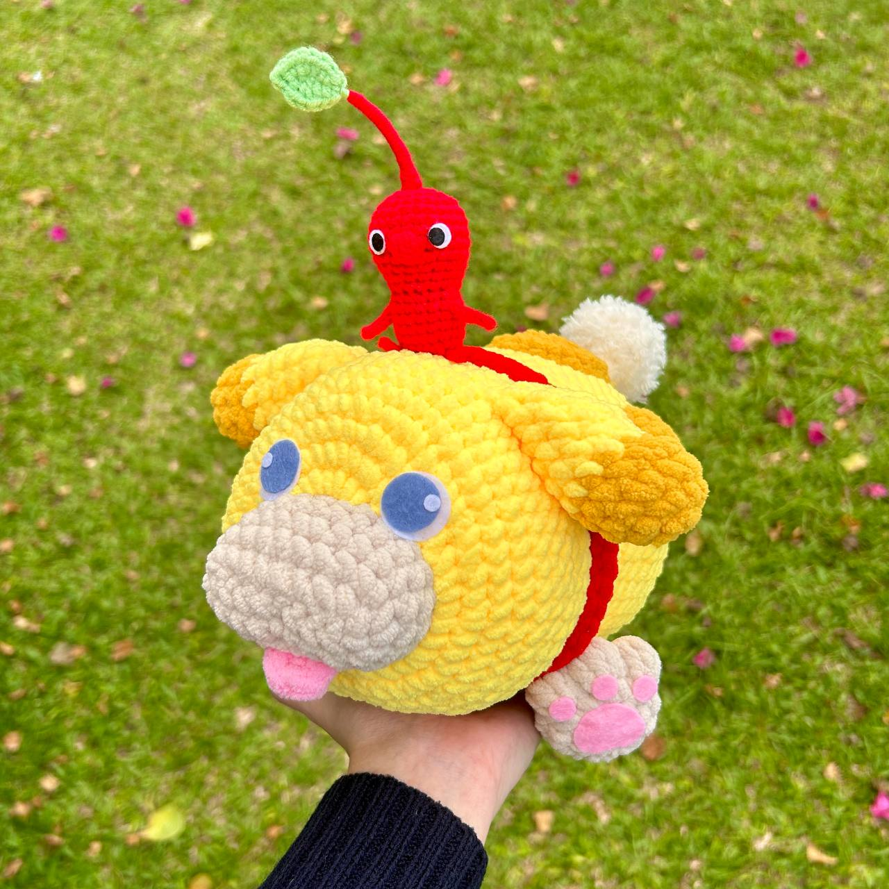
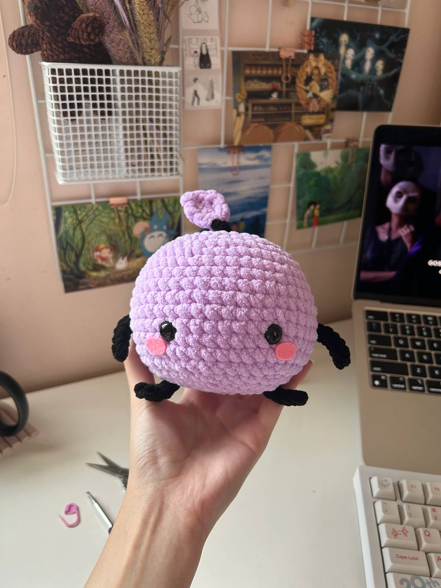
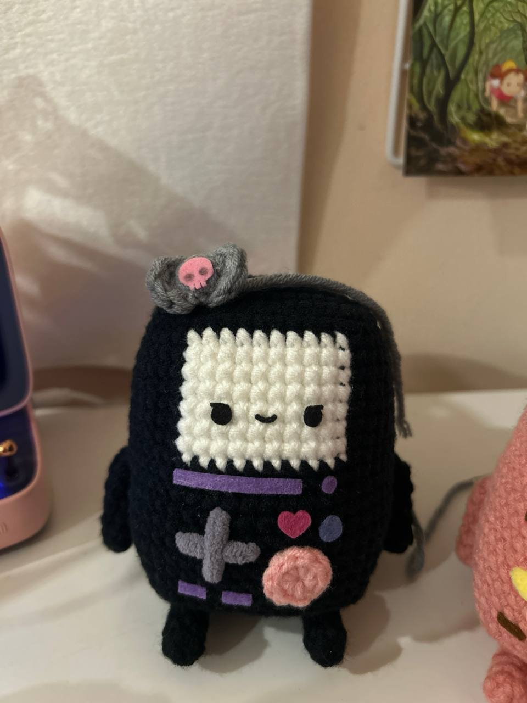
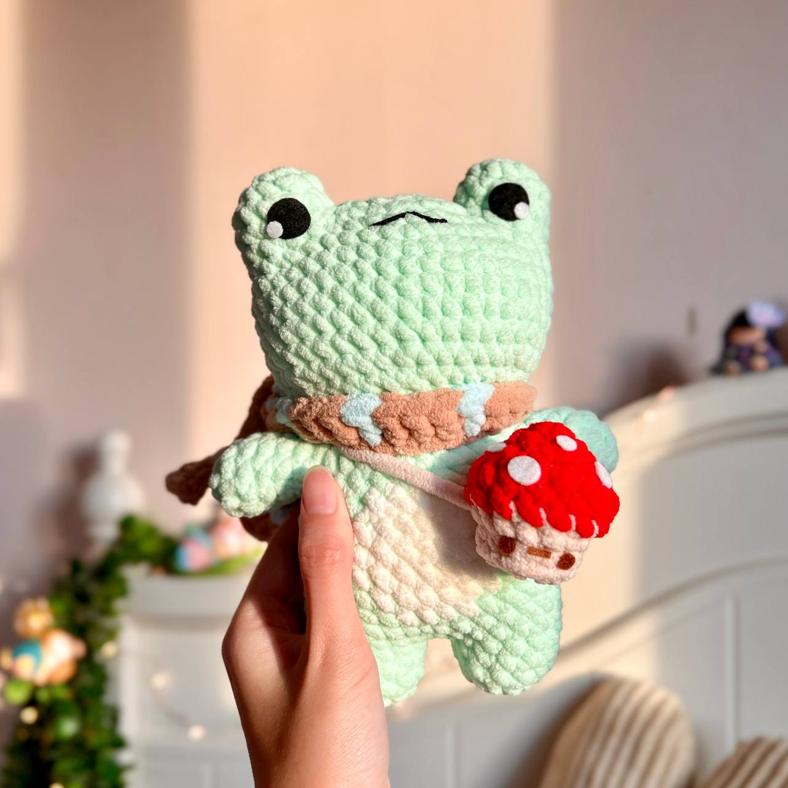
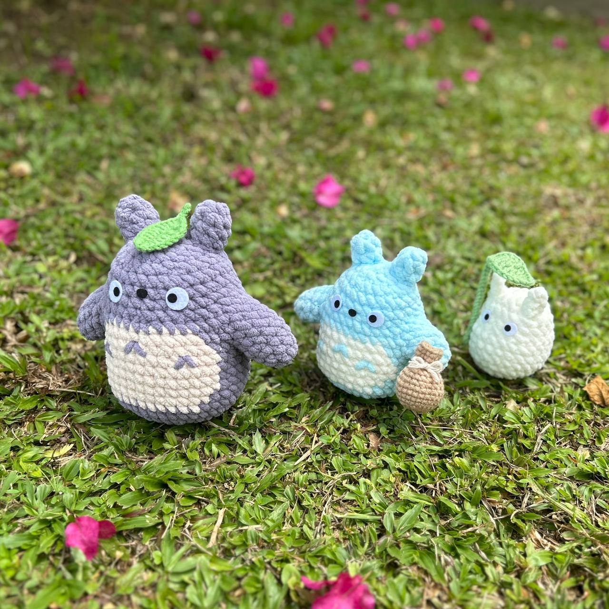

WaiCrochets was founded in 2022 by Wai. She started the business on Instagram as a side business before
committing full time in 2023. As of Nov 2023, she has amassed over 86k followers on Instagram and has
made over 2,500 crochet pattern and plush sales.
My Products
Wai's main products are plush crochet patterns and here are some of them! She can also make commissions
for plushies of your favourite characters or designs!
Commissions!

Lemongrab from Adventure Time.

Oatchi from Pikmin.

Purple Junimo from Stardew Valley.
Original crochet patterns

Kuromi themed of Adventure Time's BMO modified from my own BMO pattern.

Timmy the frog

Totoro, Chu-totoro and Chibi-totoro
If you like what you see and want to see more, click here to
visit my shop!
Visit my instagram and follow me on instagram @waicrochets to see more of my creations!